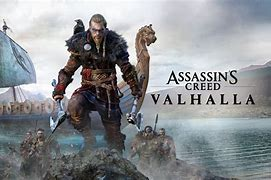

Apa Itu game assassin creed ?
Game Assassin’s Creed adalah sebuah seri permainan video aksi-petualangan dan penyelinapan yang dibuat oleh Ubisoft, sebuah perusahaan pengembang dan penerbit game asal Prancis. Game ini menggambarkan pertarungan antara Assassin, yang memperjuangkan perdamaian dengan kehendak bebas, dan Templar, yang menginginkan perdamaian melalui kekuasaan dan kontrol. Game ini juga menampilkan fiksi sejarah, fiksi ilmiah, dan tokoh-tokoh fiktif yang dipadukan dengan peristiwa dan tokoh-tokoh sejarah nyata.
Developer yang membuat game Assassin’s Creed adalah Ubisoft Montreal, sebuah studio yang berlokasi di Montreal, Kanada. Ubisoft Montreal adalah studio utama yang bertanggung jawab atas seri utama game Assassin’s Creed, mulai dari Assassin’s Creed pertama yang dirilis pada tahun 2007 hingga Assassin’s Creed Mirage yang dirilis pada tahun 2023. Selain Ubisoft Montreal, ada juga studio-studio lain yang terlibat dalam pengembangan game Assassin’s Creed, seperti Ubisoft Sofia, Ubisoft Quebec, Ubisoft Toronto, Gameloft, dan Griptonite Games.
Alasan membuat game Assassin’s Creed mungkin berbeda-beda untuk setiap developer dan seri, namun secara umum, game ini dibuat untuk memberikan pengalaman bermain yang menarik, inovatif, dan edukatif bagi para pemain. Game ini juga dibuat untuk mengeksplorasi berbagai periode sejarah, budaya, dan lokasi yang beragam, serta untuk menceritakan kisah yang personal, epik, dan dramatis tentang para Assassin dan Templar.
Dan ini beberapa series yang Populer
1. Assassin’s Creed IV: Black Flag
Seri ini populer karena menampilkan gameplay yang variatif, seperti berlayar, bertempur, dan menyelam di lautan Karibia. Seri ini juga memiliki cerita yang menarik tentang Edward Kenway, seorang bajak laut yang bergabung dengan para Assassin.
2. Assassin’s Creed II

Seri ini populer karena menampilkan karakter protagonis yang karismatik, yaitu Ezio Auditore da Firenze, seorang bangsawan Italia yang menjadi Assassin. Seri ini juga menampilkan setting lokasi yang mengagumkan, yaitu Italia pada era Renaisans.
3. Assassin’s Creed Origins
Seri ini populer karena menampilkan dunia terbuka yang luas dan detail, yaitu Mesir kuno. Seri ini juga menampilkan sistem RPG yang mendalam, seperti peningkatan level, kustomisasi senjata, dan kemampuan khusus.
4. Assassin’s Creed Odyssey
Seri ini populer karena menampilkan pilihan cerita yang mempengaruhi alur dan akhir permainan. Seri ini juga menampilkan setting lokasi yang menakjubkan, yaitu Yunani kuno. Seri ini juga menambahkan fitur combat abilities, yang membuat pertarungan lebih seru dan dinamis.
5. Assassin’s Creed Valhalla

Seri ini populer karena menampilkan tema dan keunikan tersendiri, yaitu era Viking. Seri ini juga menampilkan gameplay yang menantang, seperti pengepungan benteng, perampokan desa, dan pertempuran melawan makhluk mitologi.